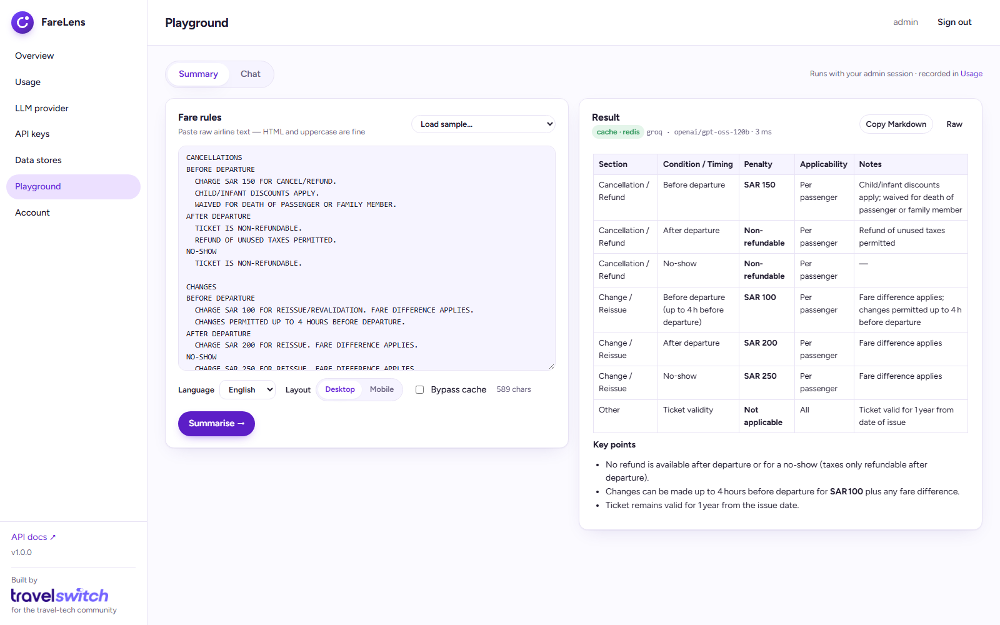
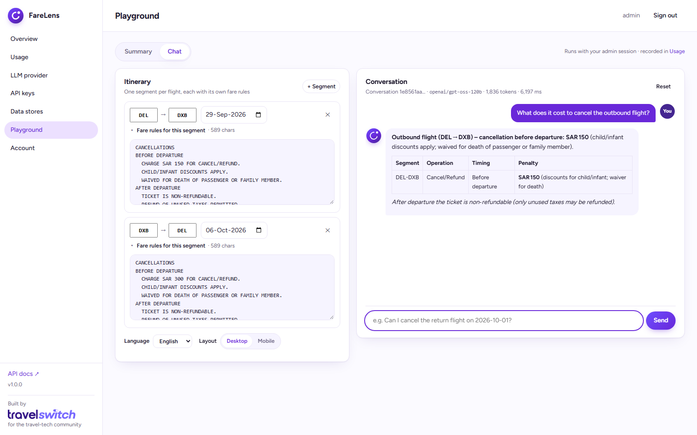
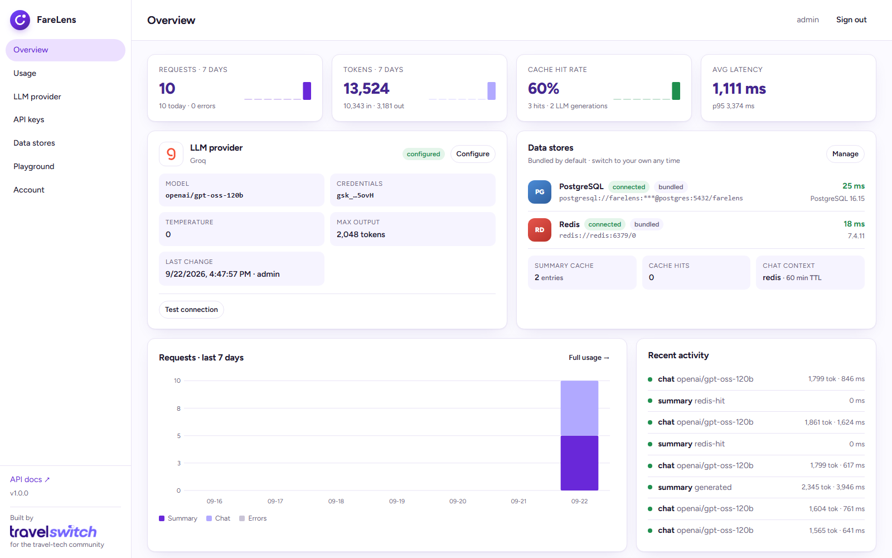
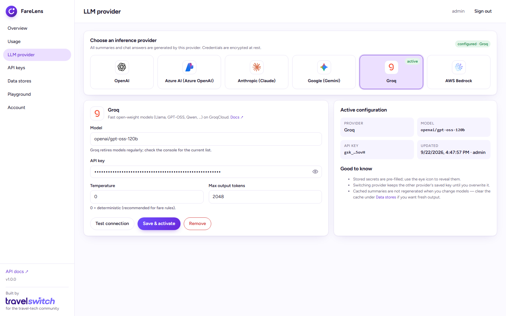
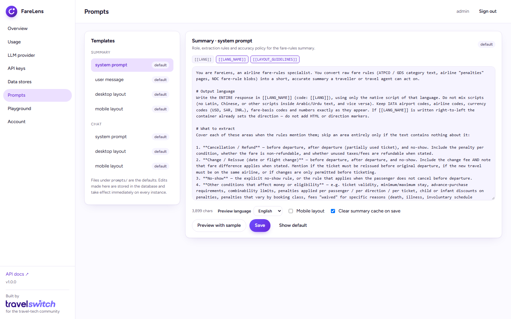

Bring your own model
FareLens is a self-hosted API and admin UI that turns raw airline fare rules from Amadeus NDC, any GDS or airline API into clear, multilingual summaries and answers the questions travellers actually ask, using the LLM provider you choose.
$ git clone https://github.com/travelswitch/farelens.git $ cd farelens $ docker compose up -d # API + Postgres + Redis, then open http://localhost:8000
Bring your own model

The problem
In NDC flows the GDS passes fare-family, price-class and fare-rule text through exactly as the airline supplies it. No short version, no length control, no standardisation across carriers. That's by design, so the integrator has to solve it.
| Section | Timing | Penalty | Notes |
|---|---|---|---|
| Cancellation | Before departure | SAR 150 | Child/infant discounts; waived for bereavement |
| Cancellation | After departure / no-show | Non-refundable | Unused taxes refundable |
| Change | Up to 4h before departure | SAR 100 | + fare difference |
| Change | After departure | SAR 200 | + fare difference |
| Change | No-show | SAR 250 | + fare difference |
…and a chat that answers "can I cancel the return on the 12th?"
How it works
POST whatever the airline returned (HTML, uppercase, telegraphic ATPCO text) to /api/v1/fare-rules/summary with a language and layout.
Markdown mini rules: a table on desktop, compact sections on mobile. Cached by content digest, so identical rules never hit the model twice.
Stream answers over Server-Sent Events from /api/v1/fare-rules/chat/stream. Segment-aware and date-aware across the whole itinerary.
Everything included
docker compose up.OpenAI, Azure OpenAI, Anthropic Claude, Google Gemini, Groq or AWS Bedrock. Test the connection from the UI; keys are encrypted at rest.
Arabic, Urdu, French, German, Hindi, Chinese and more. The response language is a request parameter; RTL scripts are handled.
Redis then Postgres, keyed by a normalised digest of the rules. Repeated fare rules cost zero tokens and return in milliseconds.
Provider setup, API keys, usage analytics, prompt editor with live preview, datastore management and a playground.
Hashed API keys, encrypted credentials, CSRF-guarded sessions, rate limiting, request ids, non-root container, health probes.
Ships with Postgres and Redis, or point it at your own from the UI. Schema migrates itself; config carries over.
In the box




Built for